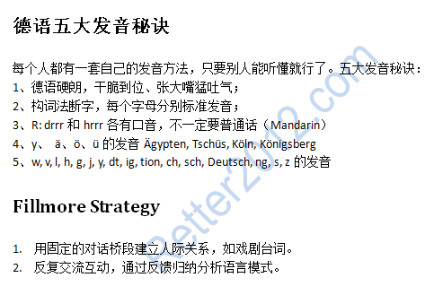

返回主页
德语五大发音秘诀

注意：
R的颤音要联系几天或几个月。但r在韵母后面(leider 的 r )发a，而l在韵母后面 (alt )发e(厄)，做口型但不发音。
You have to at least pretend to pronounce it. Habe Sie Zeit? Leider nein. 或者， alt的l发音.
联系发音： aha (acha), ahha, ahhha,...
一背解千愁。小伙伴们，背吧！
《德国简史教程》
《德语国家国情》
《瑞士简史教程》
《德语简史》
日耳曼人大迁徙（蛮族入侵）
挑战原文：但泽（Danzig）
录入德语，一边敲字，一边朗诵，真是享受。而英语的发音不标准，必须查字典。日本语汉字中读音各不相同，很麻烦的。
version:1.0; jobnet@188.com © retter2012.com